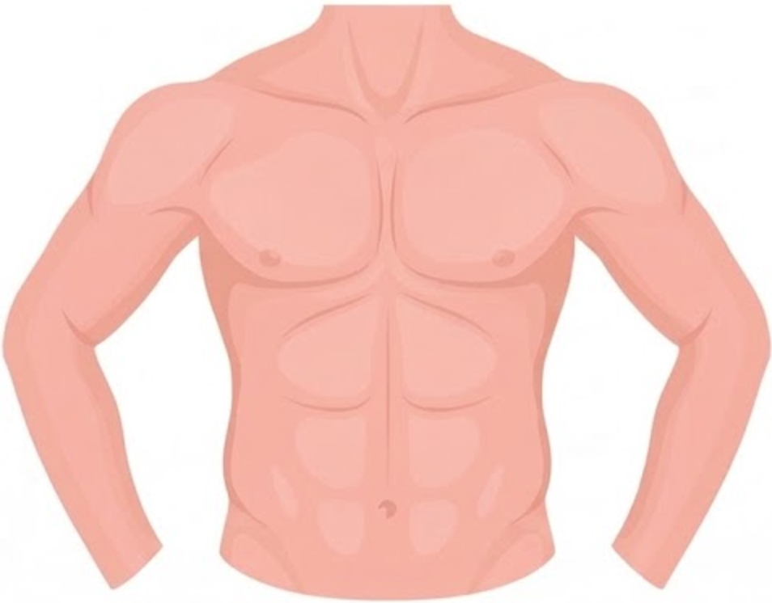
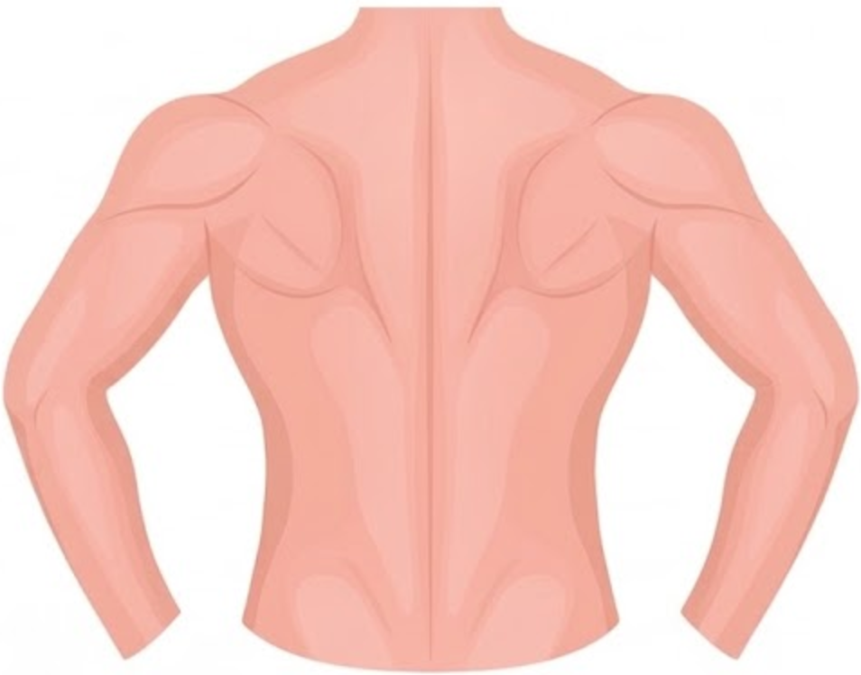

Dr. Olhar
Login válido por 12 h em modo offline. Os dados coletados ficam criptografados no aparelho até haver rede.
v A.01 · RDC 751 · LGPD
Segunda, 16 nov
Pacientes
{{ redeRotulo }}
{{ totalVisitas }}
agendadas
1
concluídas
UX-05
O ícone à direita mostra o envio de cada visita: nuvem sincronizado, flecha em envio, rede cortada sem conexão.
Excluir paciente
{{ excluirTexto }}
Cadastrar paciente
Dados de identificação
LGPD
Dados gravados criptografados no aparelho e vinculados ao prontuário no próximo envio.
Prepare o microfone
{{ pacienteNome }}
{{ micTitulo }}
{{ micTexto }}
A compatibilidade USB Audio precisa ser confirmada no dev build e no microfone homologado.
Contexto da coleta
{{ pacienteNome }}
Paciente usa oxigênio
Registre a condição observada agora.
Mapa de ausculta
{{ progressoTexto }}
1/3
{{ pane.titulo }}


{{ detLetra }}
{{ detNome }}
{{ detGrupo }}
{{ detLocal }}
{{ detDesc }}
Pendente
Em foco
Coletado
Exame concluído
Os 9 pontos do protocolo foram auscultados e validados nesta visita.
{{ dicaMapa }}
{{ instTitulo }}
Orientações antes da captura
2/3
{{ instTitulo }}
{{ instGrupo }}
{{ instLocal }}
{{ i.texto }}
{{ pontoNome }}
{{ pontoCodigo }} · 44.1 kHz · OPUS
3/3
Mantenha o sensor firme sobre o ponto marcado até o fim da contagem.
{{ timer }}
{{ timerRotulo }}
Qualidade do sinal (SNR)
{{ snr }} dB
{{ avisoTexto }}
{{ recDica }}
Revisar captura
{{ pontoNome }} · 10 s
0:000:10
Qualidade da captura
{{ revQualidade }}
{{ revAviso }}
{{ legenda }}